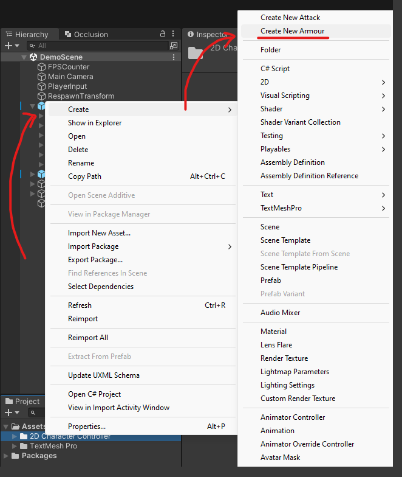
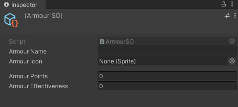

ArmourSO
SWITCH TO SCRIPTINGOverview
The ArmourSO provides a tool for customization and creation of armours for entities in the game. It enhances the defense of characters and objects.
This component pairs well with EntityHealth component found in the asset.
Create New Armour
To create a new armour, simply access the menu item by navigating to the "Assets" folder within your project files. From there, right-click and select "Create," then choose "Create New Armour." This action sets you up with a scriptable object ready to define and adjust attacks in your project.

Armour Configuration
By creating a new armour, you can now configure its settings through the inspector.
